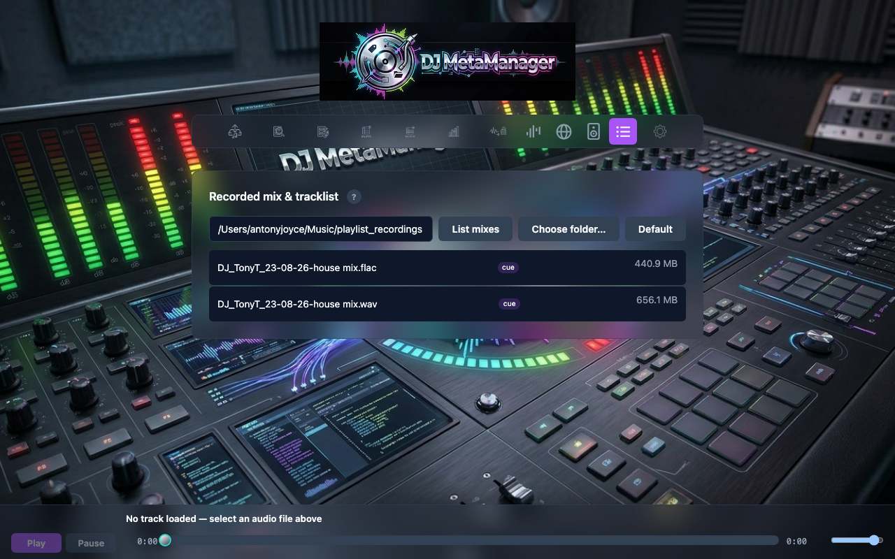
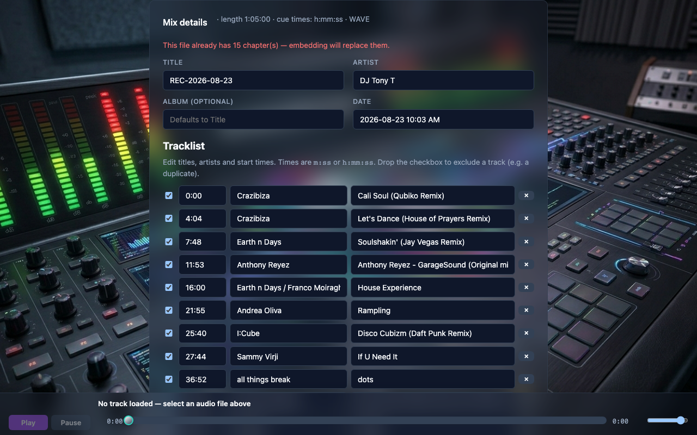
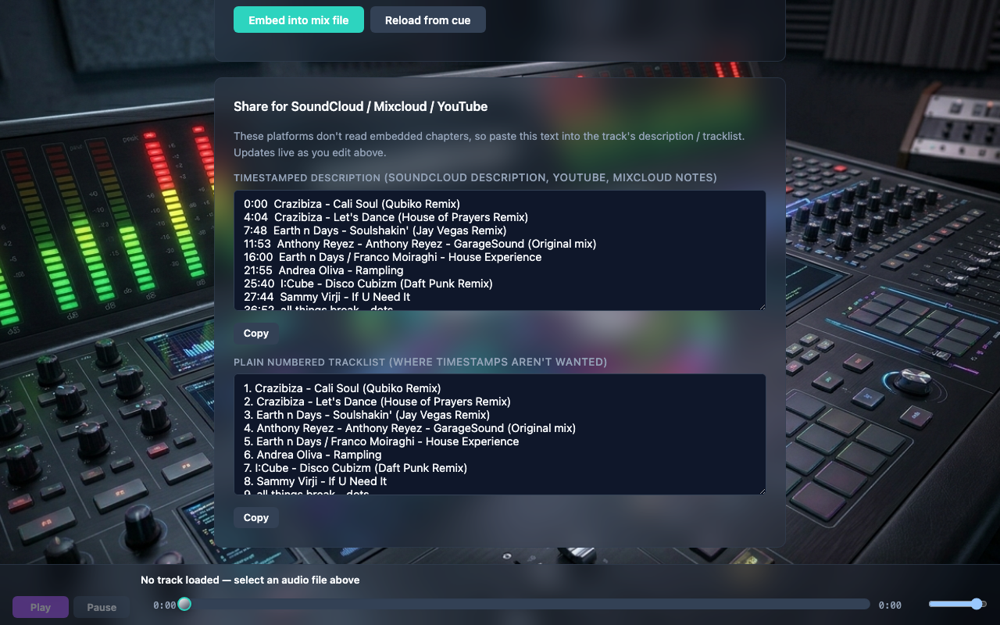

Mix Tags
When you record a mix in rekordbox it writes a sibling .cue file next to the mix audio (for example my mix.wav alongside my mix.cue) that lists every track and its start time. The Mix Tags tab reads that cue, lets you edit the tracklist, and then writes rich metadata into the mix file — plus copy-ready descriptions for SoundCloud, Mixcloud and YouTube.
1. Select the recorded mix
The tab opens on your Capture output folder (Settings → Capture output; it falls back to the destination folder). Files that have a paired .cue show a cue badge — click one to load it. Use Choose folder… or Default to point elsewhere.

28-mix-cue-load.png).2. Edit the mix details and tracklist
The parsed mix Title, Artist and Date appear at the top, and every track is shown with its start time, artist and title — all editable. rekordbox often folds the artist into a track’s title and sometimes adds a duplicate final track, so this is the place to tidy those up. Untick a track’s checkbox to exclude it, edit start times as m:ss or h:mm:ss, or use + Add track for anything the cue missed.

29-mix-cue-editor.png).h:mm:ss rather than the CUE-standard mm:ss:ff. Mix Tags detects which by fitting the times against the real audio length, so chapter markers land in the right place.
3. Choose what to write and embed
Under Write to file, pick any of:
- Chapter markers (ID3 CHAP/CTOC) at each track boundary — navigable in players that support chapters (VLC, foobar2000, chapter-aware podcast apps).
- Tracklist comment — a timestamped list written to the Comment tag.
- Mix tags — Title, Artist, Album and Date.
Click Embed into mix file. Re-embedding replaces any previous chapters. Reload from cue discards your edits and re-reads the original .cue.
4. Share to SoundCloud, Mixcloud and YouTube
Those platforms don’t read embedded chapters, so the Share panel generates copy-ready text from your edited tracklist: a timestamped description (for the SoundCloud description, YouTube, or Mixcloud notes) and a plain numbered tracklist. Both update live as you edit, each with a Copy button.

30-mix-cue-share.png).SoundCloud reads Title and Artwork from the file’s tags on upload (now written for you); paste the timestamped description into its description field. Mixcloud has a per-track tracklist in its uploader — enter the tracks from the timestamped list.